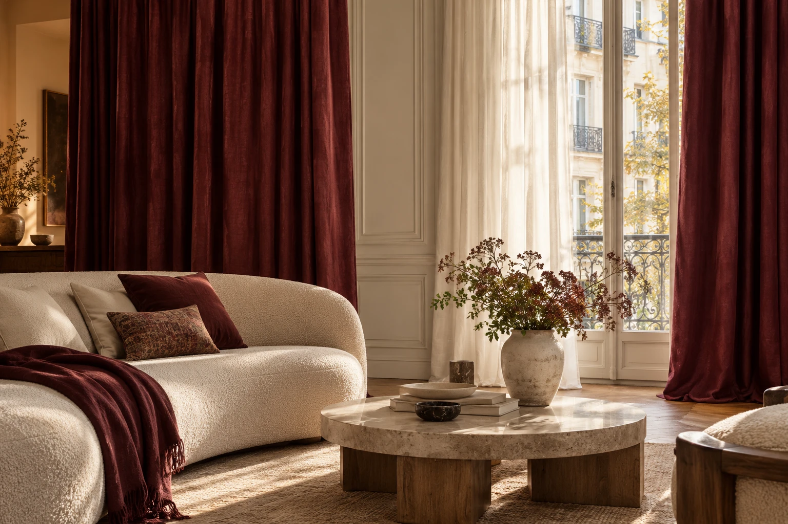
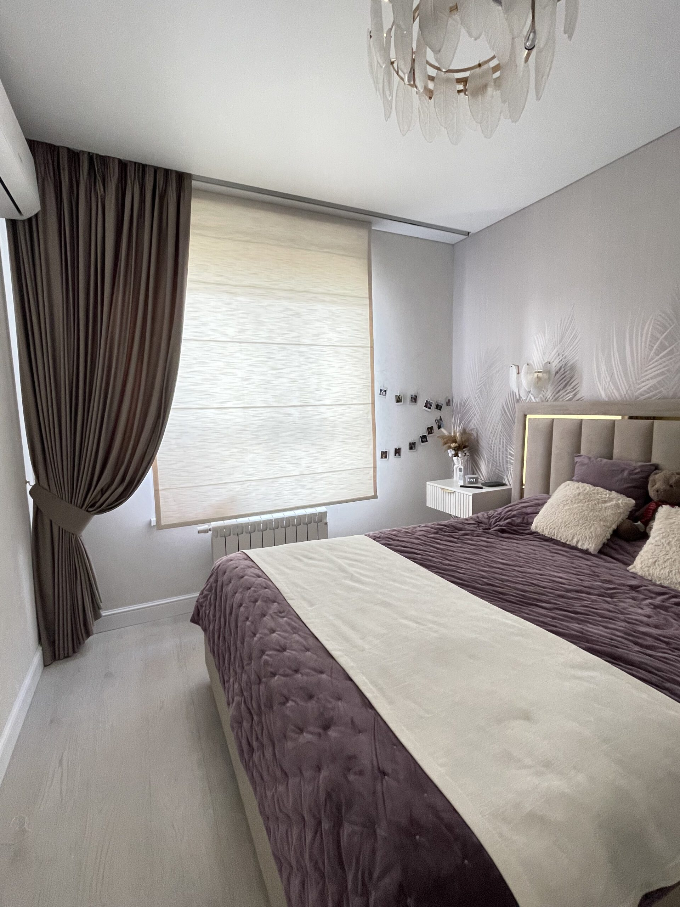

01 / ПОРТЬЕРЫ И ТЮЛЬТёплая палитра,
Тёплая палитра,
мягкие складки
Полупрозрачный тюль и плотные портьеры. На фото можно увидеть посадку, длину и сочетание двух тканей.

Шторы на заказ · текстиль для дома
Подберём ткани и сошьём шторы под ваш интерьер — от первых образцов до установки.
Обсудить подбор штор ↗Посмотреть наши работы →Для знакомства достаточно фото комнаты.
С моделью и тканями поможем определиться.
01Ткани под свет и цвета вашей комнаты
02Модели и пошив по вашим размерам
03Согласование стоимости до пошива
От одного окна до целого дома
Начните с того, что вам нужно.
Остальное обсудим вместе.
Для мягкого света, уединения и выразительного оформления окна. Подберём плотность, оттенок и модель.
Обсудить шторы →
02 / РИМСКИЕ ШТОРЫКогда хочется сохранить лёгкость интерьера. Самостоятельно или в сочетании с портьерами.
Обсудить римские шторы →Подушки и покрывала, которые связывают шторы с мебелью и отделкой. Соберём согласованную палитру.
Обсудить текстиль →Сначала — ваш дом. Потом — ткань.
Смотрим на освещение, оттенки стен и мебель. Обсуждаем, нужно ли затемнение, сколько света сохранить и как вы хотите видеть окно.
Так выбираем не просто понравившуюся ткань, а решение для вашей комнаты.
Подобрать решение для моей комнаты ↗Фотографии из архива Dreidt
Здесь — фотографии оформления.
Нажмите, чтобы рассмотреть детали.
Полупрозрачный тюль и плотные портьеры. На фото можно увидеть посадку, длину и сочетание двух тканей.
Серые портьеры в сочетании со светлым тюлем. Лаконичное оформление с акцентом на ритм складок.
Нравится одно из сочетаний? Обсудим, как адаптировать его к вашей комнате.
Хочу похожее оформление ↗Заказ без лишней неопределённости
Сначала обсуждаем решение.
Затем согласуем детали и стоимость.
Вы показываете комнату и рассказываете, что хочется изменить: свет, уют, уединение или общее настроение.
Обсуждаем ткани, модель и размеры. Уточняем состав работ, стоимость и сроки до начала пошива.
После согласования шьём текстиль по размерам и договариваемся об установке.
Цена зависит от ткани, расхода материала, модели и состава работ. Для предметного расчёта понадобятся размеры окна и выбранное решение.
Обсудить мой заказ ↗Перед знакомством
Это нормально. Начните с фото комнаты и расскажите, что вам нравится и что хочется изменить. Обсудим подходящие варианты.
Для первого обсуждения достаточно фото и примерных размеров. Для окончательного расчёта и пошива нужны точные замеры.
Ткань, её расход, модель штор, сложность пошива и дополнительные работы. Состав заказа и стоимость согласуем до пошива.
Первый шаг — знакомство с вашим интерьером
Оставьте телефон и, если удобно, добавьте фото. Обсудим задачу, варианты оформления и какие данные нужны для расчёта.